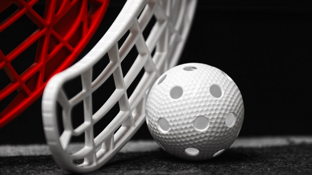

--------------------------------------------------------------------------------------------------------------------------------------------------------------------------------------------
Florbols ir komandu sporta veids, kas ir līdzīgs hokejam, un tiek spēlēts telpās ar plastikāta nūjām un bumbiņu. Spēles uzdevums ir trāpīt bumbiņu pretinieku vārtos un neļaut pretiniekiem iemest tavos vārtos. Florbolu koordinē Starptautiskā Florbola federācija (IFF), kuru dibināja 1986. gadā Zviedrija, Somija un Šveice. IFF dalībnieces 2023. gadā ir 79 valstis,vairāk nekā 3000 klubi un 270 000 reģistrēti spēlētāji visā pasaulē, no kuriem vairāk nekā puse Zviedrijā. Florbola spēle ir radīta kā droša telpu hokeja forma. Traumas risks florbolā ir mazāks nekā citos hokeja paveidos, bet spēle joprojām no spēlētāja prasa gan ātrumu, gan izturību, gan īpašas spēles prasmes.
Šo spēli spēlē 2 komandās, katrai komandai laukumā vienlaicīgi ir seši spēlētāji, no kuriem viens ir vārtsargs. Atšķirībā no hokeja, florbolā vārtsargam nav nūjas. Komandai ir arī tiesības vārtsargu nomainīt pret sesto laukuma spēlētāju. Florbola laukuma izmērs ir 40x20 metri. Laukumam apkārt ir izvietotas apmales, kuru augstums sasniedz 50 centimetrus. Tāpat kā hokejā laukuma, stūri ir ieapaļi. Vārtu izmērs ir 160x115 cm.
Spēle ir sadalīta 3 periodos, katrs no tiem ilgst 20 minūtes (15 minūtes junioriem), un starp periodiem ir 10 minūšu pārtraukums.Laukuma spēlētāji florbolā spēlē bumbiņu ar nūju. Nūjas parasti ir veidotas no viegliem un izturīgiem materiāliem; lētākas nūjas ir veidotas no plastmasas vai stiklašķiedras, bet dārgākas nūjas ir veidotas no kompozīta materiāliem, kevlara vai karbona. Vidējs nūjas svars ir ap 270 gramiem.Florbola nūja, salīdzinot ar hokeja nūju, ir salīdzinoši īsa. Īsais nūjas garums nodrošina ātrāku manevrētspēju.
Florbola bumbiņai ir speciāls dizains. Tā ir veidota no plastikāta un parasti ir baltā krāsā, 26 caurumi (katrs 1 cm plats) un tukšais bumbiņas vidus tai piešķir labas aerodinamiskās īpašības. Bumbiņas svars ir 23 grami, bet diametrs — 7,2 cm.Nūjas un bumbiņas vieglais svars nodrošina ātrākus metienus. Florbola pasaules metiena spēka rekords ir 205 km/h, bet hokeja — 184 km/h. Lielais metienu ātrums prasa no vārtsargiem ātru reakcijas laiku un arī spēju notvert metienus ar neapzinātiem refleksiem. Šī iemesla dēļ florbola spēlēs, salīdzinot ar hokeju, ir liels gūto vārtu daudzums.